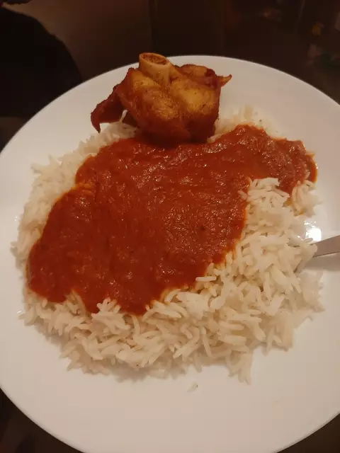

Stew and White Rice

Description
Nigerian chicken stew is a delightful West African stew made with chicken thighs and simmered in a savory sauce made with tomatoes and peppers. It is so versatile and can be eaten with many different dishes!
Ingredients:
- 1 kg Chicken
- 1 blended/grated onion
- 2 tbsp garlic
- 2 tbsp ginger
- 1 sachet Chicken seasoning
- Fresh tyme/rosemary
- 1 tbsp paprika
- Water
- 1 can Chopped Tomatoes
- 1 red bell pepper
- 1 onion
- 1 scotch bonnet pepper
- 2 garlic cloves
- Vegetable oil
- 1/2 onion (chopped)
- Sauce we made for stew
- 1 sachet stew seasoning
- Basil
- Meat stock
- Meat (optional)
- 1 tsp grounded crayfish
- Rice
- Boiled water
- Salt
Steps:
- Put chicken in the pot, add onions, herbs and seasoning. Cook for 10 minutes. Mix. Add water and cook until soft.
- When chicken is done grill in oven or fry. Add onions for taste.
- Wash rice, par boil and cook
- In a blender, blend together chopped tomatoes, bell pepper, onion, garlic and scotch bonnet pepper
- In pot add oil and fry the onions
- Add sauce that was made before, stew seasoning and basil. Leave to cook on 3 for 40 minutes
- Add meat stock, stir well. Cook for some more minutes. Add chicken (optional)
- Dish with rice and chicken